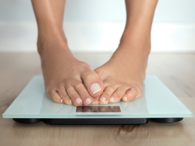
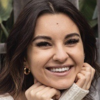
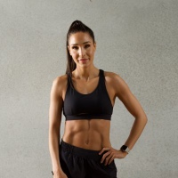

This blog will contain content for my MI 349 course.
Fight the COVID-19: Three Tips to Get Back Into Shape
Taylor Flewelling

This year has had the average person in their home much more than we typically would be. As a result of that, many of us have found our eating habits have become unhealthier, and our fitness levels have decreased. This blogpost will contain three healthy habits you can build into your everyday life to fight off the quarantine weight gain.
Go on a 30 minute walk daily
Daily walking, and even a brisk jog does wonders to exercise your cardiovascular system. Not only is this good for your overall health and wellness, but it will likely motivate you to be more active in your everyday lifestyle.
Eat the Rainbow
Being at home more is a great excuse to brush up on your cooking skills! There are many resources online to help guide you in the direction of easy recipes that can take anywhere from 15-30 minutes. Always try to include fruits and veggies in your everyday recipes, and a good source of protein as well. My tip is to eat fruits with breakfast and lunch, and a vegetable with dinner. Find produce that you like to make it more enjoyable!
Try out New Exercises
Exercising provides not only great physical benefits, but tremendous mental benefits as well. If you are stuck at home more than you normally would be, it is a great idea to implement an exercise schedule that you enjoy. This can be anything from biking, yoga, weight training, whatever you enjoy! The endorphins you will get will be great for your mind and body.
Keep your eye out for future posts for more health and wellness tips!
Three Fitness Influencers to Watch
Taylor Flewelling
These three fitness influencers will help guide you in the right direction when you are looking to spice up your exercising routine!
Maryana Dvorska

Maryana is a former bodybuilding influencer who now focuses on health and wellness. She posts content on Instagram and Youtube that is beginner friendly, including resistance band training, bodyweight workout, and much more. She gives excellent advice on how to take a healthy approach to fitness.
Kayla Itsines

Kayla is a fitness influencer who is most famously known for her guide “Bikini Body Guide” also referred to as BBG. Millions have used her guide as their stepping stone to getting into shape, and she has a variety of programs. She has guides that fit those who have never worked out before, all the way up to experienced athletes. Users are able to pick the program that fits them the best, and Kayla does the rest of the work for them! She even provides meal guides to accompany her fitness guides. You can find her on Instagram, and the Sweat app.
Tasha Marie James
Tasha is an influencer who heavily promotes weightlifting. She is an influencer to follow if you are a little more experienced in fitness, or if you are looking to become stronger through weightlifting! She posts daily content on her Instagram profile, including full workouts that you can duplicate yourself. Many of her workouts can be done both in a gym or from the comfort of your own home, with equipment. She is a great influencer to follow if you are looking for positivity and progress pictures on your feed!